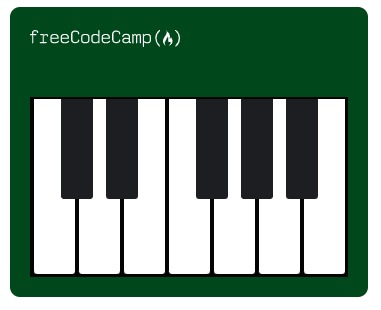

¿Quien soy?
Soy desarrolladora web, me apasiona crear aplicaciones innovadoras y funcionales. Trabajo con HTML, CSS, y JavaScript. Me gusta resolver problemas y crear soluciones web robustas y escalables. Estoy siempre al día con las últimas tendencias en desarrollo web.
Leer másLa programación es el proceso de diseñar, escribir, probar y mantener el código fuente de los programas de computadora, lo que nos permite crear soluciones innovadoras para problemas complejos, automatizar tareas y desarrollar tecnologías que mejoran la vida diaria. A través de la programación, podemos crear software, aplicaciones, sitios web y sistemas que nos rodean, desde los dispositivos móviles que llevamos en nuestros bolsillos hasta los sistemas de control de tráfico aéreo y los hospitales. La programación es una habilidad fundamental en el mundo digital actual, y su importancia solo seguirá creciendo a medida que la tecnología avance y se integre cada vez más en nuestra vida cotidiana.
- Andrea Silva
Mis proyectos

Proyecto 1
En este proyecto se construye un paisaje de ciudad nocturna utilizando únicamente HTML y CSS. El objetivo principal es aprender a crear figuras usando div, colores y propiedades de estilo. Se trabaja con posicionamiento, tamaños y colores para formar edificios, ventanas y el cielo. También se aplican conceptos como gradientes, sombras y capas visuales para dar profundidad al diseño. Este ejercicio permite comprender cómo CSS puede usarse para crear ilustraciones simples sin imágenes externas. Además, ayuda a desarrollar habilidades para organizar elementos dentro de una página web. Es un proyecto para entender mejor el CSS.
Ver proyecto
Proyecto 2
Este proyecto consiste en diseñar marcadores de colores utilizando CSS. Durante el ejercicio se aprende a usar gradientes, sombras y combinaciones de color para dar un efecto más realista a los objetos. También se practican propiedades como background, box-shadow y opacity. El objetivo es comprender cómo funcionan los modelos de color en CSS, especialmente RGB y gradientes lineales. Además, se trabaja la organización de elementos dentro de contenedores. Este proyecto ayuda a mejorar la creación de estilos visuales más atractivos. Es una actividad clave para entender cómo CSS puede dar profundidad y realismo a los diseños.
Ver proyecto
Proyecto 3
En este proyecto se construye un piano digital utilizando HTML y CSS. El objetivo es aprender a organizar elementos de forma estructurada para representar las teclas blancas y negras de un piano. Se utilizan propiedades como display, position y border para colocar correctamente cada tecla. También se practica el uso de diferentes tamaños y colores para diferenciar los tipos de teclas. Este ejercicio ayuda a comprender cómo crear interfaces organizadas y simétricas. Además, permite mejorar el control del espacio entre elementos. Es un proyecto útil para practicar la disposición visual y el diseño de componentes.
Ver proyecto
Proyecto 4
Este proyecto consiste en crear la ilustración de un gato usando únicamente HTML y CSS. El objetivo es aprender a construir figuras utilizando formas geométricas, bordes y colores. Durante el desarrollo se usan propiedades como border-radius para formar las orejas, ojos y cara del gato. También se trabaja con posicionamiento y superposición de elementos para lograr la forma completa del dibujo. Este ejercicio demuestra cómo CSS puede utilizarse para crear arte digital simple. Además, ayuda a mejorar la precisión en la colocación de elementos dentro de la página. Es un proyecto creativo que fortalece las habilidades.
Ver proyecto